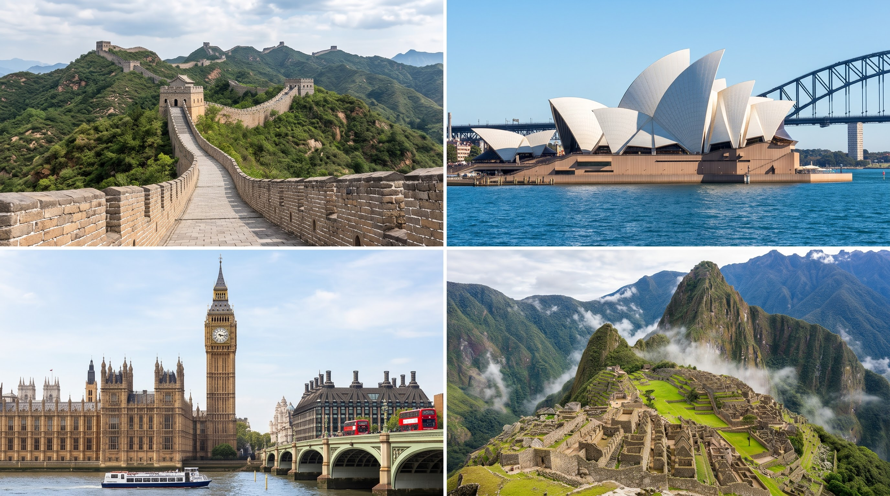

Viaja sin limites
La mejor web de viajes
Planea, vive y recuerda todos tus viajes


Un país de contrastes fascinantes donde la historia antigua se da la mano con la tecnología más vanguardista. Puedes caminar por la majestuosa Gran Muralla, recorrer los palacios imperiales de la Ciudad Prohibida en Pekín o alucinar con los rascacielos futuristas y la iluminación del skyline de Shanghái. Además, la gastronomía local y los paisajes sacados de un cuento, como las montañas de Guilin, hacen de China un viaje verdaderamente inolvidable.
El destino definitivo para los amantes del sol, el surf y la fauna única. En Australia podrás bucear entre los colores vibrantes de la Gran Barrera de Coral, explorar el desierto rojo para ver el sagrado Uluru o conocer de cerca a koalas y canguros. Sus ciudades costeras, como Sídney con su famosa Ópera, ofrecen una vibra relajada e cosmopolita rodeada de playas paradisíacas.
Aunque es una ciudad y no un país, la capital británica tiene tanta personalidad y oferta que bien merece su propio lugar. Es el corazón de la cultura, la moda y el entretenimiento europeo. Pasea junto al Big Ben y la noria London Eye, entra gratis a museos de clase mundial como el Museo Británico y explora sus barrios llenos de carácter, desde los mercados alternativos de Camden Town hasta la elegancia de Notting Hill.
Ubicada en el corazón de los Andes peruanos, esta histórica ciudad fue la antigua capital del Imperio Inca. Caminar por sus calles empedradas te permitirá descubrir una mezcla única de ruinas incaicas y arquitectura colonial española. Cusco es la puerta de entrada perfecta para explorar el Valle Sagrado, subir a la mística ciudadela de Machu Picchu y maravillarte con la colorida Montaña de los Siete Colores.